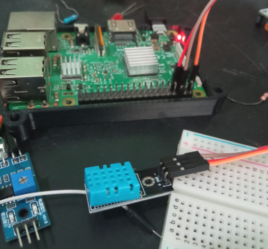
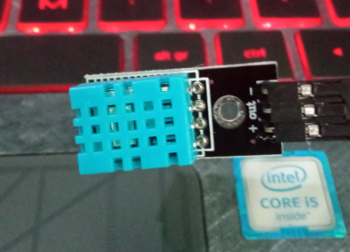

Primero tenemos que instalar la extensión Adafruit DHT, esto con el primer código en la barra de comandos, ya con eso podremos detectar tanto la temperatura como la humedad actual
sudo pip3 install Adafruit_DHT
import Adafruit_DHT
import time
DHT_SENSOR = Adafruit_DHT.DHT11
DHT_PIN = 4
while True:
humidity, temperature = Adafruit_DHT.read(DHT_SENSOR, DHT_PIN)
if humidity is not None and temperature is not None:
print("Temp={0:0.1f}C Humidity={1:0.1f}%".format(temperature, humidity))
else:
print("Sensor failure. Check wiring.")
time.sleep(3)
Realizado por Christopher Eduardo Barrientos Guerra